Lようこそ実力至上主義の教室へ
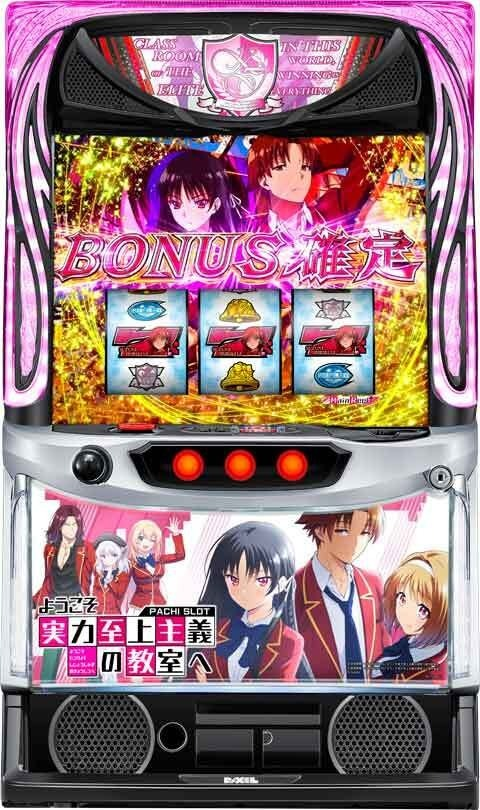
【天井情報】
CZ間で最大500G＋α消化するとCZに当選。
AT間で最大980G＋α消化するとATに当選。
天井でのAT当選時の約50%でボーナス以上の恩恵を獲得。
設定変更時はAT間天井が630G＋αに短縮。天井恩恵も有効。
AT間でCZ7スルー後、8回目のCZがAT当選に書き換えられる。
【リセット判別】
不明
【有利区間について】
| ①エンディングボーナス後 |
| ②1回のATでよう実ボーナス12回当選 |
| ③一撃2400枚獲得 |
| ④AT終了時に有利区間内で一定差枚数獲得 |
エンディング等で有利区間がリセットされた場合はフリーズ高確に突入。フリーズが発生しなくてもATの引き戻しは濃厚となる。
ATやCZ間ハマリG数、CZモード、クラスランク、よう実ポイント、穢れポイントなど総合的に判断して打つ感じになりそうです。
狙い目
【リセット狙い】
AT間 140Gから
【CZ間天井狙い】
駆け抜け後以外 350Gから
駆け抜け後 0Gから よう実ポイント1回目MAXまで
※駆け抜け後はよう実ポイントMAX1回目でCZ当選？
※レア役等自力でCZ当選した場合は、よう実ポイントがリセットされないため、駆け抜け→よう実ポイント溜まる前にCZ当選→AT非当選の場合はよう実ポイントMAXまで消化。
【AT間天井狙い】
440Gから(CZ間0G想定）
【CZモード狙い】
CZモード4濃厚はCZかAT当選まで。3以上はCZ間狙いのボーダー下げる程度？
ステージがWhite Roomは前兆orCZモード4となるためCZ当選まで？無人島、豪華客船の扱いは不明。
CZかAT当選までモードダウン無し。
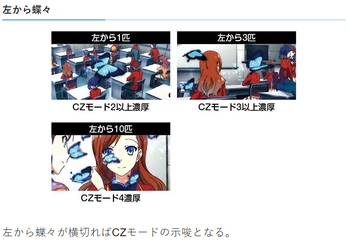
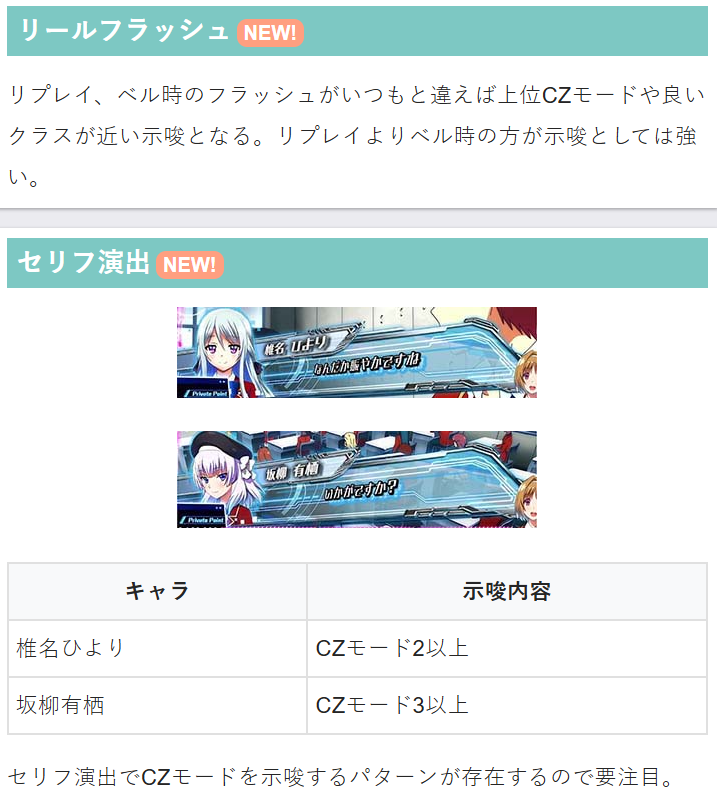
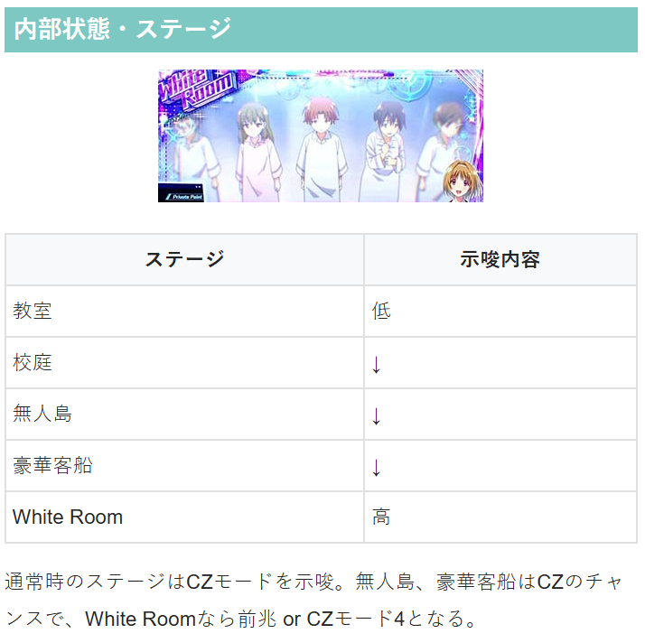
【クラスランク狙い】
A、Bクラス滞在時は消化した方が良さそう。
8の倍数周期はBクラス以上濃厚のため、7.15時限目から打ち出して8.16時限目を消化という打ち方になりそう？
※クラスランクは液晶と内部で完全にはリンクしていない模様
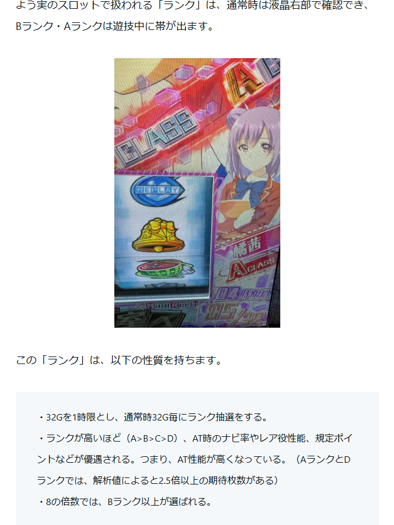
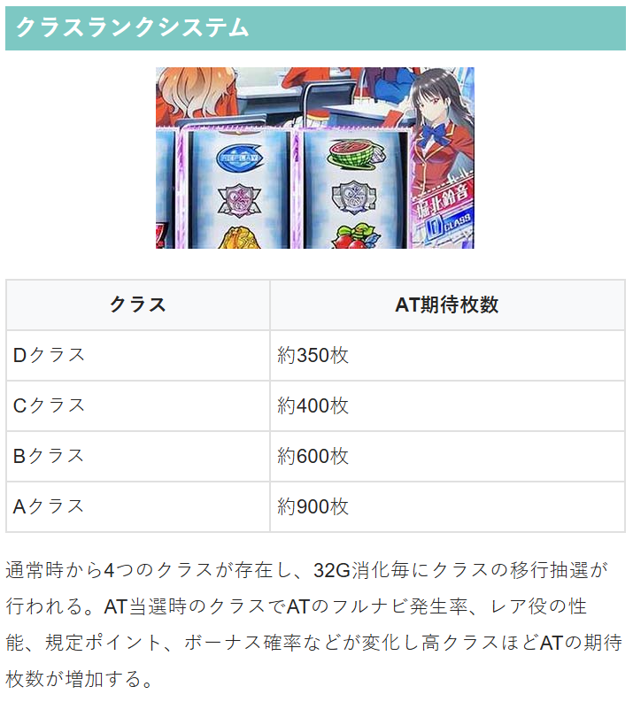
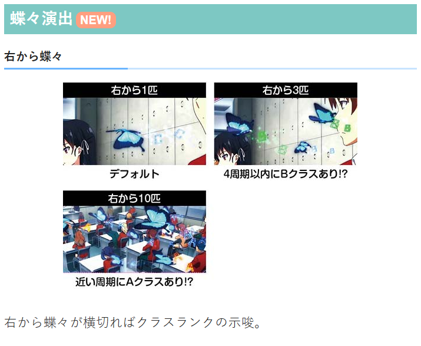
【よう実ポイント狙い】
駆け抜け後1回目 0から
駆け抜け後以外1回目 3-4割くらい
よう実ポイントMAX4回目 6-7割くらい
ロゴが赤色 4-5割くらい
その他 8-9割くらい
※期待値が出ない部分なので狙い目はイメージ
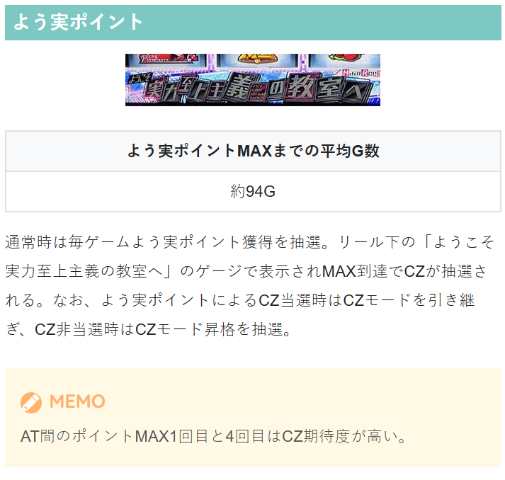
【穢れポイント狙い】
蓄積演出多で穢れ解放まで？
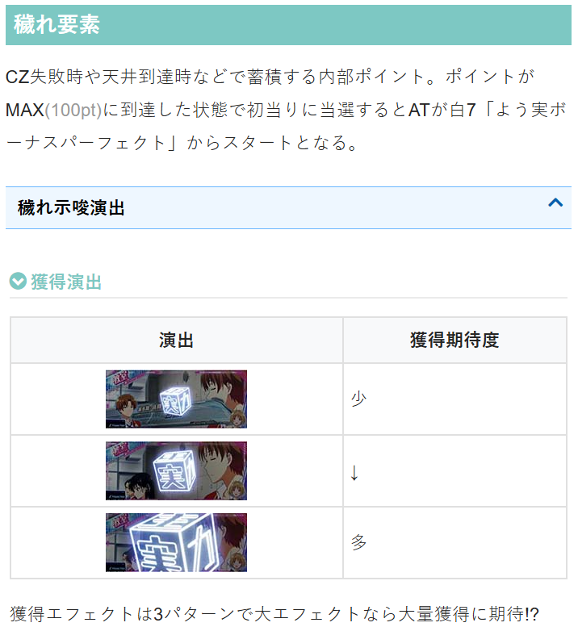
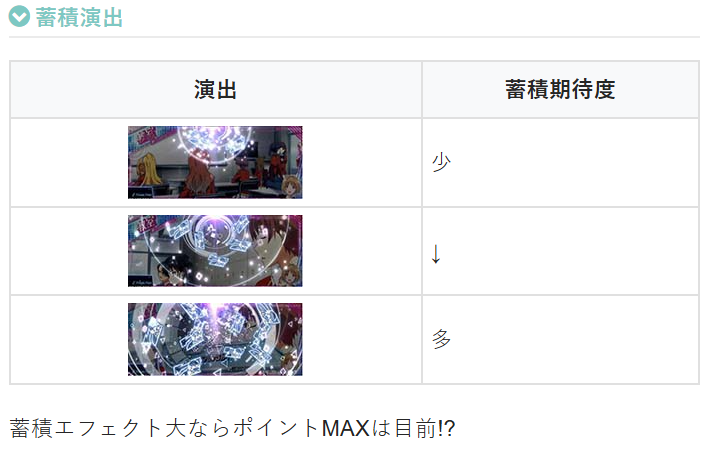
【スルー天井狙い】
6スルー以上から
【有利区間関連狙い】
不明
【プライベートポイント】
使用するタイミングとしてはAT引き戻し区間中のYC高確滞在期待度を確認に使うのが良さそう？
または通常時にボーダーギリギリの台を打つ時に使用し、クラスランクやモード示唆を見て押し引きに利用する感じ？
AT後１回目のよう実ポイント狙い時に使用し、クラスランクやモード示唆が強ければそのまま続行する等の使い方も良さそう？
示唆の画面等はちょんぼりすたに記載あり。（重要な示唆演出→プライベートポイント使用の項目）
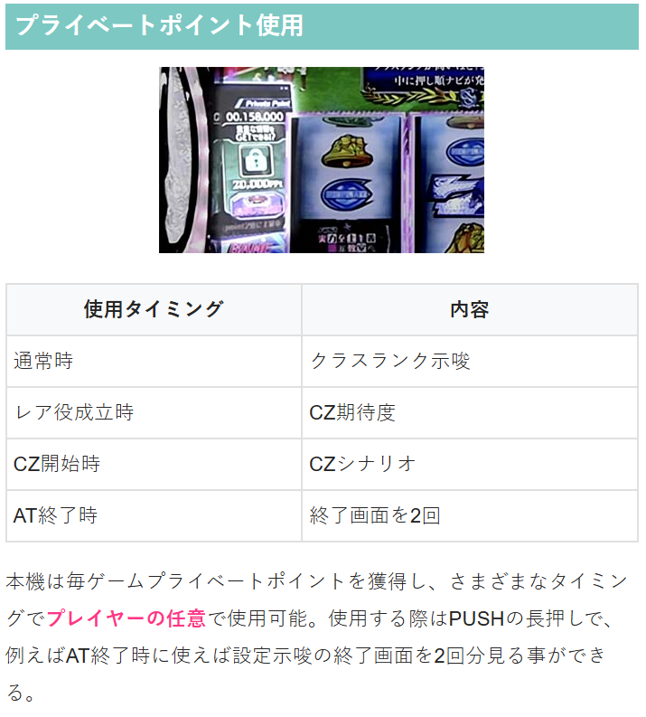
やめ時
AT終了後は引き戻し「YC高確率」を消化してやめ？目安は10-20Gくらい。
10数G回したらプライベートポイントを使用して押し引きする感じ？
YC超高確率の場合は引き戻し濃厚のため必ずフォロー。
駆け抜け後は1回目のよう実ポイントMAXまで消化。
駆け抜け後以外でもよう実ポイントが3-4割溜まったらポイントMAXまで。
CZ失敗後はクラスランク、AT間ハマリ等で押し引き。
その他
履歴の見方
ヴァルヴレイヴ の様にCZで信号上がるタイプと上がらないタイプあり。
ART→CZ
RB→よう実チャンス(AT)
BB→よう実ボーナス(AT中のボーナス)
CZ信号上がらないタイプはCZの履歴が出て来ない
RBの粒1個で終わっているのが駆け抜け後。
②データ20:46RBは駆け抜け後と思われる。
①CZで信号上がる履歴
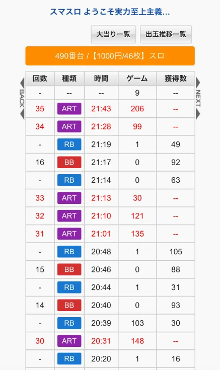
②CZで信号上がらない履歴
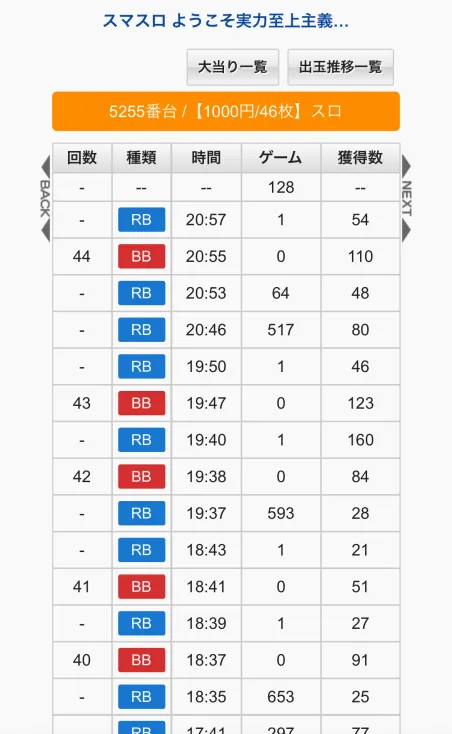
参考元
基本情報
- メーカー: DAXEL
- 機械割: 97.7% 〜 114.0%
- 導入開始日: 2025年05月07日（水）
- ゲーム性概要: ●レア役やよう実ポイント契機のCZクリアがAT当選のメインルート ●32G＋α周期で切り替わるクラスランクによってAT中のベルナビ発生率やボーナス当選率が変化 ●AT「よう実チャンス」は純増約2.0〜3.3枚のゲーム数上乗せ型 ●AT中はベル6連やレア役で「よう実ボーナス」を抽選 ●「綾小路超覚醒ゾーン」や「裏モード」など、強力なトリガーも搭載 ●有利区間リセット時は1G限定のフリーズ高確へ移行＆フリーズ非発生でもAT引き戻し濃厚


打ち方
打ち方・小役
打ち方（小役狙い）
「最初に狙う絵柄」 左リール枠上〜上段を目安にBARを狙う。スイカがスベってきた時以外、中＆右リールはフリー打ちでOKだ。

「スイカ停止時」 中リールはBARを目安にスイカを狙う。右リールにこぼしはないのでフリー打ちでOK。

「レア役の停止形（一例）」

変則押しはNG
通常時、押し順ナビなし時は左リール第1停止での消化を推奨する。

中段チェリー
中段チェリーの恩恵
| 状態 | 恩恵 |
|---|---|
| 通常時（フリーズなし） | AT80Gスタート |
| 通常時（フリーズあり） | AT80Gスタート＋Aクラス＋裏モード |
| よう実チャンス中 | 白7揃い＋綾小路超覚醒ゾーン |
| よう実ボーナス中 | 上乗せ100G＋ドラゴンバースト3セット＋ 綾小路超覚醒ゾーン（※） |
| 綾小路超覚醒ゾーン中 | 白7揃い＋ボーナス1回保証 |
| 裏モード中 | 白7揃い＋綾小路超覚醒ゾーン＋ 裏ポイントがMAX寸前まで蓄積 |
※すでに綾小路超覚醒ゾーンを持っている場合はベルナビ10個に変換
裏モード中は中段チェリー成立でボーナスに当選するので裏モードは終了してしまうが、裏ポイントがMAX目前まで貯まるので、すぐに裏モードへ再突入する。
解析情報通常時
小役関連
小役確率（設定1）
| 役 | 確率 |
|---|---|
| 弱チェリー | 1/124.1 |
| 強チェリー | 1/270.8 |
| 中段チェリー | 1/16384.0 |
| スイカ | 1/91.0 |
| 弱チャンス目 | 1/99.9 |
| 強チャンス目 | 1/385.5 |
レア役の合算確率は1/28.2。
リールロック
リールロック発生でレア役濃厚（強レア役の可能性大）かつCZ以上当選期待度がアップ。弱レア役だった場合はCZ以上濃厚になる。

リールロック発生率
| 役 | CZ非当選時 | CZ以上当選時 |
|---|---|---|
| スイカ | ー | 4.7% |
| 弱チェリー | ー | 4.7% |
| 弱チャンス目 | ー | 4.7% |
| 強チェリー | 6.6% | 19.5% |
| 強チャンス目 | 6.6% | 19.5% |
| 中段チェリー | ー | 50.0% |
モード
CZモード概要
レア役成立時のCZ当選期待度が変化するCZモードが存在（モード1〜4の4段階）。CZ当選までモードが転落することはなく、レア役契機でのCZ当選時やAT終了時にモードが再抽選される。
CZモードの特徴
| 項目 | 特徴 |
|---|---|
| CZ当選率 | 1＜2＜3＜4の順にアップ |
| モード昇格契機 | レア役での抽選、よう実ポイントMAX時の一部 |
CZモード昇格期待度
| 役 | 期待度 |
|---|---|
| 弱チェリー | 低 |
| 弱チャンス目 | ↓ |
| 強チェリー | ↓ |
| スイカ | ↓ |
| 強チャンス目 | 高 |
設定変更時のCZモード振り分け
| CZモード | 振り分け |
|---|---|
| モード2 | 50.0% |
| モード3 | 25.0% |
| モード4 | 25.0% |
CZモードアップ当選率（一部）
| 役 | CZモード1中 | CZモード2中 | CZモード3中 |
|---|---|---|---|
| 強チェリー | 33.2% | 33.2% | 25.0% |
| スイカ | 75.0% | 50.0% | 33.2% |
| 強チャンス目 | 100% | 75.0% | 50.0% |
スイカと強チャンス目がモードアップしやすい。とくに強チャンス目の当選率が高く、強チャンス目を引いてCZ非当選だった場合はモード2以上濃厚だ。
CZ
ガールズチャレンジ概要
前半のランクアップパート（5G）と後半のジャッジパート（最大5G）の2部構成。前半は成立役に応じてランク（継続率）を上げていき、後半では継続率ごとの抽選を5回突破できればATに当選する。

ガールズチャレンジ性能
| 項目 | 内容 |
|---|---|
| 当選契機 | レア役での抽選、よう実ポイントMAX時の抽選 |
| 継続ゲーム数 | 前半5G＋後半最大5G |
| AT期待度 | 約34% |
| 前半中の抽選 | 成立役に応じてランクアップ抽選 |
| 後半中の抽選 | ランクごとの継続抽選を5回突破できればAT当選、 小役入賞時は継続濃厚 |
［前半］成立役ごとの抽選
| 役 | 抽選 |
|---|---|
| ハズレ | 50%以上でランクアップ |
| リプレイorベル | ランクアップ濃厚、約50%で2or3ランクアップ |
| 弱レア役 | 2ランク以上アップ濃厚、 いきなりランク10まで上がる可能性あり |
| 強レア役 | 3ランクアップ濃厚、 いきなりランク10まで上がる可能性あり |
ランクごとの継続率
| ランク | ハズレ時 | 小役入賞込み |
|---|---|---|
| 2 | 56% | 65% |
| 3 | 65% | 72% |
| 4 | 68% | 75% |
| 5 | 72% | 78% |
| 6 | 76% | 81% |
| 7 | 80% | 84% |
| 8 | 86% | 89% |
| 9 | 92% | 94% |
| 10 | 100% | 100% |
小役入賞時は必ず継続する。
前半パート終了時のランクの分布
| ランク | 分布 |
|---|---|
| 2 | 6.2% |
| 3 | 12.1% |
| 4 | 18.1% |
| 5 | 20.0% |
| 6 | 17.3% |
| 7 | 12.2% |
| 8 | 7.2% |
| 9 | 3.5% |
| 10 | 3.4% |
「前半：ランクアップパート」


「後半：ジャッジパート」 第3停止までにカットインが発生すれば継続。BETで復活するパターンもあり。


［違和感告知モード］ CZの突入画面でPUSHボタンを3回押すと、違和感告知モードに変更可能。 違和感告知モードでは、ジャッジパート中の継続時に違和感演出が発生しやすくなる。発生した違和感は継続時に確認可能だ。

実力至上主義ゾーン（上位CZ）概要
アイコンと成立役によってATを抽選するCZ。あらかじめ10G分のアイコンが決定し、アイコンは1Gごとに横にスライド。アイコンの色と成立役でAT期待度が変化する。 アイコンの種類はシナリオ管理となっていて、基本はアイコンの種類を視認できないが、プライベートポイントを使用すると内容を表示させることができる。

実力至上主義ゾーン（上位CZ）性能
| 項目 | 内容 |
|---|---|
| 当選契機 | レア役での抽選、よう実ポイントMAX時の抽選 |
| 継続ゲーム数 | 10G＋α |
| AT期待度 | 約65% |
| 消化中の抽選 | アイコンと成立役を参照してATを抽選 （赤アイコンは小役入賞でAT濃厚） |
| その他 | 10Gで1度も小役を引けないと10G延長、 トータル20G間小役を引かなかった場合はAT濃厚 |
「アイコン」 アイコンは基本的には？表示となっていて色がわからないが、プライベートポイントを使用することで確認可能だ。


アイコン色・成立役ごとの期待度
| 項目 | 内容 |
|---|---|
| アイコン色の序列 | 青＜緑＜紫＜赤 |
| 紫アイコン時 | レア役成立でAT濃厚 |
| 赤アイコン時 | 小役入賞でAT濃厚 |
| アイコン色不問 | 強チェリー、強チャンス目はAT濃厚 |
レア役成立時は、もっとも期待度の低い青アイコンでも33%以上でATに当選する。
［完全告知モード］ CZ突入画面でPUSHボタンを3回押すと、完全告知モードへの変更が可能。1G目で当選した場合のみ第1停止時に下パネルが消灯、それ以外はリール回転開始時に下パネルが消灯する。

ランクアップ振り分け
| ランクアップ | その他 | リプレイ ベル | 弱レア役 | 強レア役 |
|---|---|---|---|---|
| ナシ | 50.0% | ー | ー | ー |
| 1ランク | 39.8% | 50.0% | ー | ー |
| 2ランク | 10.2% | 25.0% | 46.9% | ー |
| 3ランク | ー | 25.0% | 46.9% | 90.2% |
| MAX | ー | ー | 6.3% | 9.8% |
ランク1のまま前半が終了した場合は最終ゲームで必ず1ランクアップするので、ランク1のまま後半へ進むことはない。
［後半］抽選内容
| 役 | 抽選 |
|---|---|
| ハズレ | ランクごとの継続率で継続抽選 |
| 小役入賞 | 継続濃厚 |
| レア役 | 継続濃厚かつ、 ランクMAX時はATの初期ゲーム数上乗せ抽選 |
［後半］ランクMAX時 レア役成立時のAT初期ゲーム数上乗せ当選率
| 役 | ＋10G |
|---|---|
| 弱レア役 | 50.0% |
| 強レア役 | 100% |
後半では前半で上げたランクに応じて継続抽選がおこなわれ、小役入賞で継続濃厚。ランクMAX時（AT濃厚）はレア役でATの初期ゲーム数上乗せが抽選される。
継続ゲーム数振り分け
| ゲーム数 | 振り分け |
|---|---|
| 10G | 94.9% |
| 20G | 4.7% |
| 無限 | 0.4% |
アイコンシナリオ振り分け
| No. | 振り分け |
|---|---|
| 1 | 12.5% |
| 2 | 12.5% |
| 3 | 12.5% |
| 4 | 12.5% |
| 5 | 12.5% |
| 6 | 12.5% |
| 7 | 12.5% |
| 8 | 7.8% |
| 9 | 4.3% |
| 10 | 0.4% |
実力至上主義ゾーン開始時にシナリオを抽選で決定。20G（以上）継続の場合、シナリオは継続時に再抽選されるが、再抽選の結果前回のシナリオよりも下が選択されると＋1したシナリオに書き換えられる。
例）シナリオ5で継続した場合、再抽選で1〜5が選ばれたらシナリオ6へ書き換え、シナリオ6〜10が選ばれたらそのシナリオになる
アイコン色ごとのAT当選率
| 役 | 青 | 緑 | 紫 | 赤 |
|---|---|---|---|---|
| リプレイorベル | 6.3% | 12.5% | 25.0% | 100% |
| 弱レア役 | 33.2% | 66.0% | 100% | 100% |
| 強レア役 | 100% | 100% | 100% | 100% |
どのシナリオも最終ゲームは赤アイコンなので、最終ゲームで小役を引けば成功濃厚。
CZ確率
| 設定 | 確率 |
|---|---|
| 1 | 1/148.6 |
| 2 | 1/143.8 |
| 3 | 1/138.0 |
| 4 | 1/130.3 |
| 5 | 1/121.8 |
| 6 | 1/115.5 |
ガールズチャレンジと実力至上主義ゾーンの合算確率だ。
クラスランク
クラスランク概要
ゲーム数と当該ランクはつねにリールの右側に表示（内部的なランクと見た目のランクは完全リンクではない）されていて、約32Gごとにクラスランクが変動。AT当選時のクラスランクによってAT性能（純増やボーナス当選率など）が変化する。 フェイクを含む前兆中は、32Gを消化してもクラスランクが下がることはない。

クラスランクの特徴
| 項目 | 特徴 |
|---|---|
| AT性能 | D＜C＜B＜Aの順にアップ |
| ランクの変化契機 | 32G消化ごと |
| チャンス周期 | 8の倍数周期はBクラス以上濃厚 （1時限目＝1周期） |
| その他 | Dクラスが3連続した場合はBクラス以上濃厚、 フェイク含む前兆中はランク下降ナシ |
AT当選時のクラスランク比率
| ランク | 比率 |
|---|---|
| D | 約32% |
| C | 約33% |
| B | 約22% |
| A | 約13% |
クラスランク振り分け
| クラスランク | その他 | 8の倍数周期 | 内部的に Dクラス3連続後 |
|---|---|---|---|
| Dクラス | 約50% | ー | ー |
| Cクラス | 約35% | ー | ー |
| Bクラス | 約10% | 約60% | 約67% |
| Aクラス | 約5% | 約40% | 約33% |
通常周期でも約15%でBクラス以上が選択される。
よう実ポイント
よう実ポイント概要
リール下部のタイトルロゴの「ようこそ～へ」までの12文字の部分がポイントゲージになっていて、全点灯（ポイントがMAX）するとCZ抽選がおこなわれる。 ポイントは毎ゲームの成立役に応じて抽選され、 平均94GでMAXポイントに到達 。よう実ポイント契機でCZに当選してもCZモードは転落しないが、CZ非当選時はCZモード昇格の可能性がある。

よう実ポイント性能
| 項目 | 内容 |
|---|---|
| ポイント獲得契機 | 毎ゲームの抽選 |
| ポイントMAX時 | CZを抽選（平均94GでMAX到達） |
| その他 | CZ当選時はCZモードの転落ナシ、 CZ非当選時はCZモード昇格を抽選 |
| 期待度の高い周期 | AT後、1回目と4回目のポイントMAX時は、 その他の周期に比べてCZ期待度が高い |
よう実ポイントのMAXは240pt。
AT終了後・よう実ポイントMAX時のCZ当選率
| 回数 | 当選率 |
|---|---|
| 1回目 | 約70% （よう実ボーナス非当選で終了後の1回目は100%） |
| 4回目 | 約50% |
| その他 | 約17% |
YC高確終了後、1回目と4回目のポイントMAX時はその他の回数に比べてCZ期待度が高い。 また、AT当選〜YC高確を抜けるまでに一度もよう実ボーナスを引けなかった場合、救済として1回目のポイントMAXで必ずCZに当選する。
［1・4周期目］よう実ポイント契機のCZ種別振り分け
| 周期 | ガールズチャレンジ | 実力至上主義ゾーン |
|---|---|---|
| 1周期目 | 91.1% | 8.9% |
| 4周期目 | 93.8% | 6.3% |
| 救済1周期目 | 66.8% | 33.2% |
CZ当選時は周期数を参照してCZ種別を抽選。1・4周期目の振り分けは全設定だが、その他の周期は高設定ほど実力至上主義ゾーンに当選しやすい。 なお、本前兆中のレア役ではCZ種別の昇格抽選がおこなわれるので、前兆中にレア役を引いて実力至上主義ゾーンが出てきた場合は昇格した可能性もある。
獲得よう実ポイント振り分け
| ポイント | レア役以外 | 弱レア役 | 強レア役 |
|---|---|---|---|
| 1pt | 62.5% | ー | ー |
| 3pt | 35.2% | 50.0% | ー |
| 20pt | 2.3% | 48.4% | 90.2% |
| 40pt | ー | 1.2% | 9.4% |
| 60pt | ー | 0.4% | 0.4% |
毎ゲーム、最低1ptを獲得する。
点灯文字ごとの蓄積ポイント量示唆
| 文字 | ポイント量 |
|---|---|
| 非点灯 | 0pt～19pt |
| ようこそ | 20pt～39pt |
| 実 | 40pt～59pt |
| 力 | 60pt～79pt |
| 至 | 80pt～99pt |
| 上 | 100pt～119pt |
| 主 | 120pt～139pt |
| 義 | 140pt～159pt |
| 「義」と「の」の間のプレート | 160pt～179pt |
| の | 180pt～199pt |
| 教 | 200pt～219pt |
| 室 | 220pt～239pt |
| へ | 240pt到達 |
穢れ要素
穢れ要素概要
CZ失敗時や天井到達時などに、内部的にポイントを獲得。100pt貯まった状態でATに当選すると、白7揃い（よう実ボーナスパーフェクト）からスタートする。

穢れ要素性能
| 項目 | 内容 |
|---|---|
| ポイント獲得契機 | 初期ポイントを設定変更時に抽選、 CZ失敗時、天井到達時などにポイント獲得 |
| 100pt到達時 | 次回初当り時に白7揃いからスタート |
獲得示唆、蓄積示唆パターンの演出が存在。蓄積：大は100pt到達目前だ。
［獲得：小］

［獲得：中］

［獲得：大］

［蓄積：小］

［蓄積：中］

［蓄積：大］

設定変更時の初期穢れポイント振り分け
| ポイント | 振り分け |
|---|---|
| 0pt | 9.8% |
| 30pt | 30.1% |
| 50pt | 30.1% |
| 70pt | 30.1% |
設定変更時は90%以上で穢れポイントを30pt以上持った状態からスタート。約30%で70ptが選択されるため、朝イチはチャンスだ。
前兆
前兆ゲーム数振り分け
フェイク前兆は15G以下が選ばれるので、前兆ゲーム数が16Gを超えれば本前兆濃厚。弱レア役契機のフェイク前兆は短いゲーム数が選ばれやすい（75%が7G以内に終了）傾向にあるため、弱レア役からの前兆が長ければ本前兆期待度がアップする。
［レア役契機］前兆ゲーム数振り分け
| 前兆 | 弱レア役→ フェイク前兆 | 強レア役→ フェイク前兆 | 弱・強レア役→ 本前兆 |
|---|---|---|---|
| 3G | ー | ー | 3.1% |
| 4G | 12.5% | ー | 4.7% |
| 7G | 62.5% | ー | 12.5% |
| 8G | ー | ー | 3.1% |
| 11G | 18.8% | 50.0% | 25.0% |
| 12G | ー | ー | 3.1% |
| 15G | 6.3% | 50.0% | 42.2% |
| 16G | ー | ー | 3.1% |
| 19G | ー | ー | 3.1% |
［よう実ポイント契機orYC高確中］前兆ゲーム数振り分け
| 前兆 | フェイク前兆 | 本前兆 |
|---|---|---|
| 3G | ー | 3.1% |
| 4G | 12.5% | 12.5% |
| 7G | 62.5% | 46.9% |
| 8G | ー | 3.1% |
| 11G | 18.8% | 18.8% |
| 12G | ー | 3.1% |
| 15G | 6.3% | 6.3% |
| 16G | ー | 3.1% |
| 19G | ー | 3.1% |
CZ・AT当選率
［CZモード3］CZ当選率
| 設定 | スイカ | 弱 チェリー | 弱 チャンス目 | 強 チェリー | 強 チャンス目 |
|---|---|---|---|---|---|
| 1 | 1.6% | 6.3% | 3.1% | 50.0% | 25.0% |
| 2 | 2.0% | 7.0% | 3.5% | 50.0% | 25.0% |
| 3 | 2.7% | 8.6% | 4.3% | 50.0% | 25.0% |
| 4 | 3.9% | 11.3% | 6.6% | 50.0% | 25.0% |
| 5 | 4.7% | 15.2% | 10.2% | 50.0% | 25.0% |
| 6 | 5.5% | 18.8% | 12.5% | 50.0% | 25.0% |
［CZモード4］CZ当選率
| 役 | 当選率 |
|---|---|
| スイカ | 9.8% |
| 弱チェリー | 25.0% |
| 弱チャンス目 | 19.9% |
| 強チェリー | 100% |
| 強チャンス目 | 100% |
モード4滞在時の強レア役はCZ当選濃厚。 高設定ほど、低モード＆弱レア役でCZに当選しやすい。
天井
天井到達時の抽選
AT間天井（980G＋α or 設定変更時の630G＋α）到達時はAT当選濃厚。さらに、約50%でボーナス以上に当選する。 設定変更時の天井短縮時も恩恵を受けることができるため、朝イチ（設定変更時）の機械割は設定1でも100%以上と高い。
天井到達時の恩恵振り分け
| 恩恵 | 振り分け |
|---|---|
| ATのみ | 約50% |
| AT＋赤7揃い | 約25% |
| AT＋白7揃い | 約12.5% |
| AT＋白7揃い＋ドラゴンバースト | 約12.5% |
フリーズ
ロングフリーズ


ロングフリーズ性能
| 項目 | 内容 |
|---|---|
| 発生契機 | 通常時の中段チェリーの一部、 フリーズ高確中の抽選 |
| 恩恵 | AT80Gスタート、クラスランクがAクラス、 裏モード突入 |
ロングフリーズ動画
中段チェリーの一部で発生。AT80Gスタート・Aクラス・裏モードのすべてを獲得できる。
解析情報ボーナス時
よう実チャンス（AT）
よう実チャンス概要
初期ゲーム数40G＋αのAT。よう実ボーナスとのループで出玉を増やすゲーム性で、ボーナス中のレア役などでATゲーム数が上乗せされる。クラスランクによってボーナス当選期待度が異なるところもポイントで、AT中にBARが揃えばクラスランクが昇格する。

よう実チャンス性能
| 項目 | 内容 |
|---|---|
| 当選契機 | CZ成功、通常時の直撃抽選 |
| 初期ゲーム数 | 40G＋α |
| 1Gあたりの純増 | 約2.0～3.3枚 （クラスランクによってベルナビ発生率が変化） |
| 消化中の抽選 | ボーナス、クラスランク昇格、 レア役至上主義ゾーン、エリートタイム、 綾小路超覚醒ゾーン、裏モード（裏ポイント） |
「AT中の基本画面解説」

「ベル連カウンター」 ベル入賞ごとに1つずつ点灯していき、6連続で入賞（ハズレorリプレイを挟まずに6回連続でベルが入賞）すればボーナスとなる。レア役成立時はカウンターは据え置き（点灯も消灯もしない）。
［ベルナビの種類］ 押し順ナビはフルナビと2択ナビの2種類があり、クラスランクが高いほどフルナビが発生しやすい＝ベルが揃いやすいので出玉増加スピードが早く、ボーナス当選率も高い。

「ボーナス報酬示唆」
パネル色ごとの示唆
| 色 | 示唆 |
|---|---|
| 青 | デフォルト |
| 緑 | 特化ゾーンのチャンス |
| 紫 | 白7ボーナス濃厚 |
| 赤 | 特化ゾーン濃厚 |
| 金 | 白7ボーナス＆特化ゾーン濃厚 |
左のパネルから順に、次に当選するボーナスの種類や特化ゾーン当選を示唆。3の倍数回目は特化ゾーン当選のチャンスとなる。
「実力カウンター」
実力カウンター性能
| 項目 | 内容 |
|---|---|
| ポイント獲得契機 | ベル揃い時 （フルナビ＝1pt、1stナビ＝1or2pt） |
| 20or30pt到達時 | ATゲーム数上乗せ、ベルナビストック、 レア役至上主義ゾーン、エリートタイム、 ボーナスのいずれかを獲得 |
ベル揃いのたびにポイントが加算されていき、MAXに到達するごとに恩恵を獲得。初回突入時は20ptが、2回目以降は20pt or 30ptがMAXとなる。
「クラスランク」
クラスランク性能
| 項目 | 内容 |
|---|---|
| 初期ランク | 初当り時（通常時）のランクが初期ランク |
| ランク昇格契機 | AT中のBAR揃い |
| ランクで変化する要素 | ベルのフルナビ発生率、レア役成立時の抽選内容、 実力カウンターの規定ポイント、ボーナス当選率 |
［狙えカットイン］ BARが揃えばクラスランクが昇格。一気にAクラスへ昇格することもある。 Aクラス以外への昇格時は＋20G、Aクラスへの昇格なら＋50Gの上乗せも獲得する。

「ベルナビストック」 AT中のレア役や実力カウンターMAX時の報酬、ボーナス中の抽選などで獲得でき、ストック1個につき1回、押し順ベル成立時にフルナビが発生。ストックはリール下に表示される。


レア役至上主義ゾーン
AT中に突入する可能性があるボーナスの高確率状態。5or10G継続し、滞在中にレア役を引けばボーナス濃厚だ。

レア役至上主義ゾーン性能
| 項目 | 内容 |
|---|---|
| 当選契機 | スイカでの抽選、実力カウンターMAX時の一部 |
| 継続ゲーム数 | 5or10G |
| 消化中の抽選 | レア役成立でボーナス濃厚 |
開始時のタイトルが赤なら10G濃厚になる。
エリートタイム
突入後はATゲーム数の減算がストップして、ベルがフルナビ状態に昇格。ボーナス当選まで継続かつ、ATゲーム数の減算がないため、ベルを6連させずにロング継続させれば、エリートタイムだけで出玉を大幅に増加させることも可能だ。 エリートタイム中はレア役でのボーナス当選率もアップしていて、レア役契機のボーナスは白7ボーナス濃厚になる。

エリートタイム性能
| 項目 | 内容 |
|---|---|
| 当選契機 | レア役での抽選、実力カウンターMAX時の一部 |
| 継続ゲーム数 | ボーナス当選まで（ATゲーム数減算ストップ） |
| 1Gあたりの純増 | 約3.3枚 |
| 消化中の抽選 | レア役のボーナス当選率がアップ、 レア役契機のボーナスは白7ボーナス濃厚 |
レア役成立時のベルナビストック・ボーナス当選率
| 役 | ベルナビストック | ボーナス |
|---|---|---|
| スイカ | 60.9% | 39.1% |
| 弱チェリー | 60.9% | 39.1% |
| 弱チャンス目 | 60.9% | 39.1% |
| 強チェリー | ー | 100% |
| 強チャンス目 | ー | 100% |
ベルナビストック当選時・個数振り分け
| 個数 | スイカ | 弱チェリー | 弱チャンス目 | 強チェリー 強チャンス目 |
|---|---|---|---|---|
| 1個 | ー | 78.1% | 58.6% | ー |
| 3個 | 80.5% | 19.5% | 39.1% | 81.3% |
| 5個 | 15.6% | 2.0% | 2.0% | 12.5% |
| 10個 | 3.9% | 0.4% | 0.4% | 6.3% |
［フルナビなので純増は3.3枚/G］

実力で掴み取れ！チャレンジ
ベル6連目が2択ベルの場合、実力で掴み取れ！チャレンジが発生。2択正解でベル入賞＝よう実ボーナスに当選する。 共通ベルの場合も実力で掴み取れ！チャレンジが発生することはあるが、この場合は押し順不問でよう実ボーナス濃厚だ。

フルナビ発生率
| クラス | 発生率 |
|---|---|
| Dクラス | 25.0% |
| Cクラス | 33.0% |
| Bクラス | 50.0% |
| Aクラス | 66.0% |
実力カウンターの規定値振り分け
| クラス | 20pt | 30pt |
|---|---|---|
| Dクラス | 25.0% | 75.0% |
| Cクラス | 33.6% | 66.4% |
| Bクラス | 50.0% | 50.0% |
| Aクラス | 80.1% | 19.9% |
初期裏ポイント振り分け
| 裏ポイント | 振り分け |
|---|---|
| 2000pt | 60.5% |
| 4000pt | 25.0% |
| 6000pt | 12.5% |
| 8000pt | 2.0% |
2択不正解時・裏ポイント振り分け
| 裏ポイント | 振り分け |
|---|---|
| 1pt | 75.0% |
| 100pt | 9.4% |
| 300pt | 2.7% |
| 500pt | 9.4% |
| 1000pt | 2.7% |
| 2500pt | 0.8% |
実力カウンターMAX時の恩恵振り分け
| 恩恵 | 初回 | 2回目以降 | |
|---|---|---|---|
| ベルナビ | 1個 | ー | 25.7% |
| ベルナビ | 3個 | 30.1% | 11.4% |
| ベルナビ | 5個 | 30.1% | 11.7% |
| ベルナビ | 10個 | 4.4% | 0.7% |
| ゲーム数 上乗せ | ＋10G | ー | 5.7% |
| ゲーム数 上乗せ | ＋20G | ー | 2.9% |
| ゲーム数 上乗せ | ＋30G | ー | 4.8% |
| ゲーム数 上乗せ | ＋50G | 1.0% | 1.6% |
| ゲーム数 上乗せ | ＋100G | 0.04% | 0.4% |
| 実力至上主義 ゾーン | 5G | ー | 18.8% |
| 実力至上主義 ゾーン | 10G | 19.9% | 6.3% |
| エリートタイム | 14.5% | 6.1% | |
| よう実ボーナス | ー | 4.0% |
初回のカウンターMAX時は良い報酬を獲得しやすい。
［ スイカ ］レア役成立時の抽選値 ランク不問
| 恩恵 | スイカ | |
|---|---|---|
| 非当選 | 43.8% | |
| ベルナビストック | 12.5% | |
| 実力至上主義 ゾーン | 5G | 35.0% |
| 実力至上主義 ゾーン | 10G | 8.7% |
| エリートタイム | ー | |
| よう実ボーナス | ー | |
| 綾小路超覚醒ゾーン | ー |
［ スイカ以外 ］レア役成立時の抽選値 Dランク
| 恩恵 | 弱チェリー 弱チャンス目 | 強チェリー 強チャンス目 | |
|---|---|---|---|
| 非当選 | ー | ー | |
| ベルナビストック | 98.8% | 83.2% | |
| 実力至上主義 ゾーン | 5G | ー | ー |
| 実力至上主義 ゾーン | 10G | ー | ー |
| エリートタイム | 1.0% | 14.4% | |
| よう実ボーナス | 0.1% | 2.1% | |
| 綾小路超覚醒ゾーン | 0.02% | 0.3% |
Cランク
| 恩恵 | 弱チェリー 弱チャンス目 | 強チェリー 強チャンス目 | |
|---|---|---|---|
| 非当選 | ー | ー | |
| ベルナビストック | 98.0% | 82.4% | |
| 実力至上主義 ゾーン | 5G | ー | ー |
| 実力至上主義 ゾーン | 10G | ー | ー |
| エリートタイム | 1.7% | 15.1% | |
| よう実ボーナス | 0.2% | 2.2% | |
| 綾小路超覚醒ゾーン | 0.03% | 0.3% |
Bランク
| 恩恵 | 弱チェリー 弱チャンス目 | 強チェリー 強チャンス目 | |
|---|---|---|---|
| 非当選 | ー | ー | |
| ベルナビストック | 97.3% | 82.0% | |
| 実力至上主義 ゾーン | 5G | ー | ー |
| 実力至上主義 ゾーン | 10G | ー | ー |
| エリートタイム | 2.3% | 15.4% | |
| よう実ボーナス | 0.3% | 2.2% | |
| 綾小路超覚醒ゾーン | 0.04% | 0.3% |
Aランク
| 恩恵 | 弱チェリー 弱チャンス目 | 強チェリー 強チャンス目 | |
|---|---|---|---|
| 非当選 | ー | ー | |
| ベルナビストック | 95.7% | 78.5% | |
| 実力至上主義 ゾーン | 5G | ー | ー |
| 実力至上主義 ゾーン | 10G | ー | ー |
| エリートタイム | 3.7% | 18.5% | |
| よう実ボーナス | 0.5% | 2.7% | |
| 綾小路超覚醒ゾーン | 0.1% | 0.3% |
エリートタイム当選時・ベルナビストック個数振り分け
| 個数 | 振り分け |
|---|---|
| 1個 | 45.3% |
| 3個 | 50.0% |
| 5個 | 3.9% |
| 10個 | 0.8% |
よう実ボーナス
よう実ボーナス概要
赤7揃い（30G）と白7揃い（60G）の2種類が存在。白7揃いは名称がよう実ボーナスパーフェクトに変化するが、継続ゲーム数が違うのみで、純増や消化中の抽選などは基本的に同じだ。

よう実ボーナス性能
| 項目 | 内容 |
|---|---|
| 当選契機 | 初当り時の一部、天井到達時の一部、 AT中の抽選 |
| 継続ゲーム数 | 赤7揃い：30G 白7揃い：60G |
| 1Gあたりの純増 | 約3.3枚 |
| 消化中の抽選 | ATゲーム数上乗せ、ベルナビストック、 ドラゴンバースト |
| その他 | 白7揃いが連続する特殊モードあり |
レア役だけでなく、ハズレ（1枚役）でもATゲーム数やAT中のベルナビストックを獲得する可能性がある。
ボーナス中の抽選
よう実ボーナス中のレア役は、ベルナビストック・ATゲーム数・ドラゴンバーストをトリプル抽選。ベルナビストックかATゲーム数のどちらかは必ず獲得できる。
ドラゴンバースト当選率
| 役 | 当選率 |
|---|---|
| スイカ | 1.6% |
| 弱チェリー | 1.6% |
| 弱チャンス目 | 1.6% |
| 強チェリー | 33.2% |
| 強チャンス目 | 33.2% |
ベルナビストック当選率
| 個数 | 1枚役 | スイカ | 弱チェリー |
|---|---|---|---|
| ナシ | 96.9% | 96.9% | 87.9% |
| 1個 | 3.1% | ー | 9.8% |
| 3個 | ー | 2.3% | 1.6% |
| 5個 | ー | 0.4% | 0.4% |
| 10個 | ー | 0.4% | 0.4% |
| 個数 | 弱チャンス目 | 強チェリー | 強チャンス目 |
| ナシ | ー | 81.3% | ー |
| 1個 | 93.0% | 15.6% | ー |
| 3個 | 6.3% | 2.3% | 91.8% |
| 5個 | 0.4% | 0.4% | 7.8% |
| 10個 | 0.4% | 0.4% | 0.4% |
ATゲーム数上乗せ当選率
| 上乗せ | 1枚役 | スイカ | 弱チェリー |
|---|---|---|---|
| ナシ | 96.1% | ー | ー |
| ＋5G | 3.9% | 95.7% | 86.7% |
| ＋10G | ー | ー | 7.8% |
| ＋20G | ー | ー | 3.9% |
| ＋30G | ー | 3.1% | 0.8% |
| ＋50G | ー | 0.8% | 0.4% |
| ＋100G | ー | 0.4% | 0.4% |
| 上乗せ | 弱チャンス目 | 強チェリー | 強チャンス目 |
| ナシ | 85.2% | ー | 85.5% |
| ＋5G | 7.8% | ー | ー |
| ＋10G | 3.9% | 87.5% | 7.8% |
| ＋20G | 2.0% | 7.8% | 3.9% |
| ＋30G | 0.4% | 3.9% | 2.0% |
| ＋50G | 0.4% | 0.4% | 0.4% |
| ＋100G | 0.4% | 0.4% | 0.4% |
ドラゴンバースト
ドラゴンバースト概要
ボーナス中に突入する可能性がある、1セット5Gの上乗せ特化ゾーン。

ドラゴンバースト性能
| 項目 | 内容 |
|---|---|
| 当選契機 | ボーナス当選時の一部、ボーナス中の抽選 |
| 継続ゲーム数 | 5G/セット |
| 1Gあたりの純増 | 約3.3枚 |
| 消化中の抽選 | 全役でATゲーム数＆ベルナビストックを抽選、 レア役では綾小路超覚醒ゾーンも抽選 |
| その他 | 最終ゲームでレア役を引けばセット継続 |
上乗せ抽選
ドラゴンバースト中は、毎ゲームベルナビストック・ATゲーム数・綾小路超覚醒ゾーンのすべてを抽選。 最低でもベルナビストックorATゲーム数のいずれかを獲得可能で、綾小路超覚醒ゾーンはレア役でのみ当選する可能性がある。
ベルナビストック当選率
| 個数 | その他 | リプレイ | スイカ | 弱チェリー | ||
|---|---|---|---|---|---|---|
| ナシ | ー | 78.1% | ー | 77.3% | ||
| 1個 | 87.5% | 19.5% | 99.2% | 19.5% | ||
| 3個 | 11.7% | 2.0% | 0.4% | 2.0% | ||
| 5個 | 0.8% | 0.4% | 0.4% | 1.2% | ||
| 10個 | ー | ー | ー | ー | ||
| 個数 | 弱チャンス目 | 強チェリー | 強チャンス目 | |||
| ナシ | ー | 50.0% | ー | |||
| 1個 | ー | 33.2% | ー | |||
| 3個 | 91.4% | 12.9% | ー | |||
| 5個 | 7.8% | 3.9% | 93.8% | |||
| 10個 | 0.8% | ー | 6.3% |
ATゲーム数上乗せ当選率
| 上乗せ | その他 | リプレイ | スイカ | 弱チェリー | ||
|---|---|---|---|---|---|---|
| ナシ | 41.0% | ー | ー | ー | ||
| ＋5G | 46.9% | 82.0% | ー | ー | ||
| ＋10G | 7.8% | 11.7% | 78.9% | ー | ||
| ＋20G | 3.9% | 5.1% | ー | 97.3% | ||
| ＋30G | 0.4% | 0.8% | 7.0% | 2.0% | ||
| ＋50G | ー | 0.4% | 7.0% | 0.4% | ||
| ＋100G | ー | ー | 7.0% | 0.4% | ||
| 上乗せ | 弱チャンス目 | 強チェリー | 強チャンス目 | |||
| ナシ | 83.2% | ー | 50.0% | |||
| ＋5G | ー | ー | ー | |||
| ＋10G | 11.7% | ー | 44.9% | |||
| ＋20G | 2.0% | ー | 2.0% | |||
| ＋30G | 2.0% | 52.3% | 2.0% | |||
| ＋50G | 0.8% | 43.8% | 1.2% | |||
| ＋100G | 0.4% | 3.9% | ー |
綾小路超覚醒ゾーン当選率
| 役 | 当選率 |
|---|---|
| スイカ | 1.6% |
| 弱チェリー | 1.6% |
| 弱チャンス目 | 1.6% |
| 強チェリー | 6.3% |
| 強チャンス目 | 6.3% |
綾小路超覚醒ゾーン
綾小路超覚醒ゾーン概要
ボーナス後の一部で突入する、本機最強特化ゾーン。2択正解orレア役成立でボーナス濃厚となっていて、ボーナス終了後は再び綾小路超覚醒ゾーンへ突入する。 終了条件は2択を2回続けて失敗すること。初回は保証があるため、突入した時点でボーナス1回は獲得できる。


綾小路超覚醒ゾーン性能
| 項目 | 内容 |
|---|---|
| 当選契機 | AT中およびドラゴンバースト中のレア役の一部 |
| 継続ゲーム数 | 2択の押し順を2連続で失敗するまで |
| 消化中の抽選 | 2択正解orレア役成立でボーナスへ |
| ボーナス当選後 | 綾小路超覚醒ゾーンへ復帰 |
| 実質継続率 | 約77%（初回はボーナス保証あり） |
裏ポイント・裏モード
裏ポイント概要
よう実チャンス中、1stナビのみ発生時にベルを揃えられない（2択当てに漏れる）と、裏ポイントを獲得。規定ポイント到達で、次ゲームから裏モードへ突入する。
裏ポイント性能
| 項目 | 内容 |
|---|---|
| 獲得契機 | よう実チャンス中の1stナビが出てベル非揃い時 |
| 1契機の獲得ポイント | 1～2500pt |
| 最大10000pt到達時 | 次ゲームから裏モードへ |
［裏ポイント獲得示唆］ リールの上を左から右へ向かって黒っぽいエフェクトが流れるとポイント獲得を示唆。

［裏ポイント蓄積示唆］ 液晶に文字出現で蓄積量を示唆する。

「裏モード突入あおり」 裏の文字が表示されると、次ゲームで裏モードへ突入するかも!?

裏モード概要
裏モード中はATゲーム数の減算がストップして、 ボーナス当選まで毎ゲーム＋1GずつATゲーム数が上乗せ されていく特殊AT（滞在したゲーム数がATゲーム数に上乗せされる）。 滞在中のボーナス当選契機はベル6連のみ（レア役はベルナビストック抽選）となっているので、いかにベルを “6連続で揃えないか” がロング継続の鍵だ。

ナビの発生率は通常のよう実チャンスと同様にクラスランクによって異なるため、クラスランクが低い＝ベルナビが発生しづらいほど、裏モードがロング継続しやすい。
裏モード性能
| 項目 | 内容 |
|---|---|
| 当選契機 | フリーズ後、AT中に裏ポイントMAX到達時 |
| 継続ゲーム数 | ボーナス当選まで |
| 消化中の抽選 | 毎ゲーム、ATゲーム数を＋1Gずつ加算、 レア役はベルナビストック抽選 |
| ボーナス当選後 | よう実チャンスへ |
もちろん、裏モード中はベルナビストックの使用はナシ。押し順ナビを無視してベルを揃えないなどの攻略要素は存在しない。
中段チェリー成立時はボーナス（白7揃い）に当選するが、裏ポイントがMAX近くまで貯まるので、少しよう実チャンスを回せば裏モードに再突入する。
裏モード中のベルナビストック当選率
| 役 | 当選率 |
|---|---|
| スイカ | 12.5% |
| スイカ以外のレア役 | 100% |
YC高確
YC高確概要
AT終了後はAT引き戻しに期待できるYC高確に滞在し、レア役成立でAT引き戻しのチャンス。YC高確中に引き戻した場合、ランクが下がることはない（アップすることはある）。

YC高確性能
| 項目 | 内容 |
|---|---|
| 当選契機 | AT終了後 |
| 継続ゲーム数 | 10G＋ハズレでの転落抽選当選まで |
| 消化中の抽選 | レア役でAT引き戻しのチャンス |
引き戻し濃厚状態
エンディング後は1G限定のフリーズ高確へ移行するのだが、ここでフリーズが発生しなかった場合、引き戻し濃厚のYC高確に移行。ATに当選するまで滞在して、引き戻し後はクラスランクがB以上となる。 通常のYC高確とは異なり、液晶周囲に「超高確率中」の文字が表示される。

AT引き戻し当選率
| 役 | 当選率 |
|---|---|
| スイカ | 7.0% |
| 弱チェリー | 7.0% |
| 弱チャンス目 | 7.0% |
| 強チェリー | 50.0% |
| 強チャンス目 | 50.0% |
強レア役は1/2で引き戻し！
転落率
| 役 | 転落率 |
|---|---|
| ハズレ | 8.2% |
10G消化後のハズレ（1枚役・押し順ベルこぼし）時に転落を抽選する。
引き戻し当選時のクラスランク振り分け
| ランク | 振り分け |
|---|---|
| Dクラス | 37.5% |
| Cクラス | 50.0% |
| Bクラス | 9.4% |
| Aクラス | 3.1% |
引き戻し当選時は上記の振り分けでクラスランクを決定。前回AT中のランクよりも下のランクに当選した場合は、前回のランクに補正される（前回のランクより低いランクにはならない）。
AT引き戻し当選率
| 役 | 当選率 |
|---|---|
| レア役以外 | 5.1% |
| レア役 | 100% |
引き戻し濃厚状態は転落しないので、引き戻しに当選するまで継続。 引き戻し当選時は3〜19Gの前兆を経由するのだが、前兆中はAT初期ゲーム数の加算が抽選される（当選率は引き戻し当選率と共通）。
フリーズ高確
フリーズ高確概要
有利区間リセット時に突入する、1G限定のフリーズ高確率状態。1G間だが、フリーズ発生期待度は33%以上と高い。 フリーズ非発生だった場合でも、引き戻し濃厚のYC高確へ移行する。


フリーズ高確性能
| 項目 | 内容 |
|---|---|
| 突入契機 | 有利区間リセット時 |
| 継続ゲーム数 | 1G |
| フリーズ期待度 | 33%以上（レア役はフリーズ濃厚） |
※対象は「フリーズ高確率」と表示されたゲーム。あおり発生→YC高確へ移行するゲームでレア役を引いても対象外なので注意
ツラヌキ・有利区間
有利区間のリセット契機
| No. | 契機 |
|---|---|
| 1 | エンディングボーナス終了時 |
| 2 | 1回のATでよう実ボーナスに12回当選時 |
| 3 | 一撃2400枚以上獲得時 |
| 4 | AT終了時に有利区間内で一定の差枚を獲得時 |
上記いずれかの条件を満たすとAT終了時に有利区間がリセットされ、フリーズ高確に突入。 よう実ボーナス12回当選と一撃2400枚以上獲得時はその時点でATが終わってしまうわけではなく、有利区間リセットの権利を獲得する（ATが終了orエンディングを迎えた後に有利区間をリセット）。
ツラヌキ条件と恩恵
| 項目 | 内容 |
|---|---|
| 条件 | 有利区間リセット時 |
| 恩恵 | フリーズ高確へ突入 フリーズ高確はコチラ |
※フリーズ高確終了後はAT引き戻し濃厚のYC高確へ
エンディング
エンディングボーナス
有利区間の残り枚数が少なくなると、エンディングボーナスが発生。エンディング終了後はフリーズ高確へ移行するのでフリーズ（裏モード）のチャンス。フリーズ高確でフリーズが引けなくても、引き戻し濃厚のYC高確へ移行するため、AT引き戻しは濃厚だ。

「実力チャレンジで設定推測」 逆押しで左リール中段に白7を止めれば設定示唆ボイスが発生。上段or中段の2コマに白7を押せばOKだ。 左リール中段に赤を止めても示唆ボイスは発生するが、赤7狙いの場合は中段ビタ押しが必要になる。

※白7、赤7のいずれを狙う場合も、右リールを最初に押さないと目押しに成功しても示唆ボイスが発生しない
演出情報
通常時
ステージ解説
| ステージ | 示唆 |
|---|---|
| 教室 | CZモードが高いほど、 上位ステージへ移行しやすい （序列は教室＜校庭＜無人島＜豪華客船の順） |
| 校庭 | CZモードが高いほど、 上位ステージへ移行しやすい （序列は教室＜校庭＜無人島＜豪華客船の順） |
| 無人島 | CZモードが高いほど、 上位ステージへ移行しやすい （序列は教室＜校庭＜無人島＜豪華客船の順） |
| 豪華客船 | CZモードが高いほど、 上位ステージへ移行しやすい （序列は教室＜校庭＜無人島＜豪華客船の順） |
| ホワイトルーム | 前兆orCZモード4 |
［教室］

［校庭］

［無人島］

［豪華客船］

［ホワイトルーム］

クラスランク・CZモード示唆演出
| 演出 | 示唆 | |
|---|---|---|
| 蝶々 演出 | 左から | ● 1匹：CZモード2以上 ● 3匹：CZモード3以上 ● 10匹：CZモード4濃厚 |
| 蝶々 演出 | 右から | ● Cのエフェクト：デフォルト ● Bのエフェクト：近い周期にBクラスあり ● Aのエフェクト：近い周期にAクラスあり |
| リールフラッシュ | ● リプレイ・ベル時のフラッシュがいつもと違えば上位のCZモードや良いクラスが近いことを示唆 ● リプレイ時よりもベル時の方が示唆が強い | |
| セリフ演出 | ● 椎名ひより：CZモード2以上 ● 坂柳有栖：CZモード3以上 |
クラスランクごとのリール右のキャラ
| 滞在クラス | キャラ |
|---|---|
| Dクラス | 必ずDクラスのキャラ 綾小路はDクラスorAクラス（Aクラス期待度約50%） |
| Cクラス | 約80%でCクラス、約20%でDクラスのキャラ |
| Bクラス | 約80%でBクラス、約20%でCクラス以下のキャラ |
| Aクラス | 約80%でAクラス、約20%でBクラス以下のキャラ |
基本的にはクラスランクに対応したクラスのキャラが出現するが、約20%で見た目よりも高いランクが選択。 綾小路だけは例外で、見た目はDクラスだが約50%で内部的にAクラスになる。
［蝶々演出］


［セリフ演出］

［リール右のキャラ］

アイキャッチの示唆
| 背景 | アイキャッチ | 示唆 |
|---|---|---|
| 白 | 綾小路 | デフォルト |
| 白 | 堀北 | デフォルト |
| 白 | 櫛田 | デフォルト |
| 白 | 軽井沢 | デフォルト |
| 白 | 一之瀬 | デフォルト |
| 紫 | 佐藤 | CZ期待度アップ |
| 紫 | 龍園 | CZ期待度アップ |
| 紫 | 茶柱 | CZ期待度アップ |
| 黒 | 軽井沢（黒） | CZ以上濃厚 |
| 黒 | 堀北（黒） | CZ以上濃厚 |
| 黒 | 綾小路（黒） | 上位CZorAT濃厚＆ 現在Aクラスに滞在 |
| 黒 | 櫛田（黒） | CZ以上濃厚 かつ 裏ポイント蓄積量が多いほど出現しやすい |
［白背景］

［紫背景］

［黒背景］

プライベートポイント
プライベートポイント概要
通常時は毎ゲーム、1000ptずつプライベートポイントを獲得していき、任意のタイミングでPUSHボタンを押すと貯まったポイントを使用可能。 通常時ならクラスランクやCZモードなど、実力至上主義ゾーン中ならアイコンのシナリオを教えてくれる。 ポイントがなくなることはそうそうないので、積極的に使ってOK。消費量は多いが、AT終了画面を2回表示させることもできる。

プライベートポイントの使用箇所と示唆内容
| 使用箇所 | 示唆 |
|---|---|
| 通常時・毎ゲーム | ● 20000ptを消費 ● 現在のクラスランク示唆 ● CZモード示唆 ● 近い周期に存在する上位クラス示唆 |
| レア役成立時の第3停止後 | ● 20000ptを消費 ● 当該レア役のCZ以上当選期待度示唆 |
| 実力至上主義ゾーン中 | ● CZ中は50000pt、CZ終了後は10000ptを消費 ● アイコンのシナリオを表示 |
| AT終了画面 | ● 500000ptを消費 ● AT終了画面をもう1度表示 |
| AT終了後 | ● 20000ptを消費 ● YC高確滞在期待度示唆 |
［ボタンPUSH時の画面］

現在のクラスランク示唆
| 表示 | 示唆 |
|---|---|
| Dクラス!? | Dクラス示唆 |
| Cクラス!? | Cクラス示唆 |
| Bクラス!? | Bクラス示唆 |
| Aクラス!? | Aクラス示唆 |
CZモード示唆
| 色 | 表示 | 示唆 |
|---|---|---|
| 青 | 過程は関係ない結果が全てだ | デフォルト |
| 黄 | 実力を存分に示せ | ＣＺモード2以上 |
| 黄 | 評価０のクズではない | ＣＺモード2以上 |
| 黄 | 偶然ではなく実力で挑め | ＣＺモード2以上 |
| 緑 | 将来有望である | ＣＺモード3以上 |
| 赤 | 実力を発揮する時が来た | ＣＺモード4濃厚 |
| 赤 | 実力通り存分に楽しめ | ＣＺモード4濃厚 |
| 金 | 最高の実力である | CZ以上の本前兆中濃厚 |
4周期先までのクラスランク示唆
| 色 | キャラ | 示唆 |
|---|---|---|
| 青 | 堀北と龍園 | デフォルト |
| 緑 | 一之瀬と綾小路 | 4周期以内にBクラス以上あり |
| 紫 | 龍園と椎名 | 4周期以内にCクラス2個以上 |
| 紫 | 龍園と一之瀬 | 4周期以内にC・Bクラス1個ずつ以上 |
| 赤 | 綾小路と堀北学 | 4周期以内にAクラスあり |
| 赤 | 坂柳と龍園 | 4周期以内にA・Cクラス1個ずつ以上 |
| 赤 | 坂柳と一之瀬 | 4周期以内にA・Bクラス1個ずつ以上 |
| 赤 | 橘と堀北学 | 4周期以内にAクラス2個以上 |
［現在のクラスランク示唆］

［CZモード示唆］

［4周期先までのクラスランク示唆］

前兆
前兆示唆
リール枠にエフェクトが発生すると前兆の合図だ。

CZ
［前半］キャライルミの法則
| 色 | 法則 |
|---|---|
| 青 | ランクアップ濃厚 |
| 赤 | 2ランク以上アップ濃厚 |
| 虹 | ランク10到達濃厚 |
［青イルミ］

［赤イルミ］

［虹イルミ］

［後半］演出法則
| タイミング | 法則 |
|---|---|
| レバーON時 | 特殊SE＆キャラボイス発生で当該ゲーム継続濃厚 |
継続時のカットイン発生タイミング割合 違和感告知モード以外
| タイミング | 佐倉 | 櫛田 | 一之瀬 | |
|---|---|---|---|---|
| 第1停止時 | ー | 24.6% | 24.6% | |
| 第2停止時 | 32.3% | 24.5% | 24.6% | |
| 第3停止時 | 32.0% | 23.8% | 23.8% | |
| 第3停止後 | 32.1% | 23.4% | 23.4% | |
| 復活 | 3.6% | 3.6% | 3.6% | |
| タイミング | 軽井沢 | 堀北 | ||
| 第1停止時 | 24.5% | 21.7% | ||
| 第2停止時 | 24.5% | 21.5% | ||
| 第3停止時 | 23.9% | 21.1% | ||
| 第3停止後 | 23.5% | 20.9% | ||
| 復活 | 3.6% | 14.8% |
違和感告知モード
| タイミング | 佐倉 | 櫛田 | 一之瀬 | |
|---|---|---|---|---|
| 第1停止時 | ー | 25.0% | 24.9% | |
| 第2停止時 | 32.9% | 25.0% | 25.0% | |
| 第3停止時 | 32.6% | 24.4% | 24.5% | |
| 第3停止後 | 32.6% | 23.8% | 23.8% | |
| 復活 | 1.8% | 1.8% | 1.8% | |
| タイミング | 軽井沢 | 堀北 | ||
| 第1停止時 | 24.9% | 23.6% | ||
| 第2停止時 | 25.1% | 23.8% | ||
| 第3停止時 | 24.4% | 22.4% | ||
| 第3停止後 | 23.8% | 22.4% | ||
| 復活 | 1.8% | 7.8% |
違和感告知モード中は、継続時の復活告知の割合が半分以下になっている。
違和感演出のパターン
| No. | 演出 | 発生箇所 |
|---|---|---|
| 1 | PUSHボタンが一瞬発光した | 1～4G目 |
| 2 | 下パネルが点滅した | 1～4G目 |
| 3 | サイドランプが点滅した | 1～4G目 |
| 4 | 上部パネルが点滅した | 1～4G目 |
| 5 | 下パネルが消灯した | 5G目のみ |
| 6 | 筐体が振動した | 5G目のみ |
| 7 | サイドランプが虹色に変化した | 5G目のみ |
| 8 | 上部パネルランプが虹色に変化した | 5G目のみ |
| 9 | BGMが消えた | 5G目のみ |
| 10 | 背景が動かなくなった | 1～5G目 |
| 11 | 背景が白黒になった | 1～5G目 |
| 12 | 背景がガビガビになった | 1～5G目 |
| 13 | 左上のCZタイトルが消えた | 1～5G目 |
| 14 | スマホ内に綾小路が出現した | 1～5G目 |
| 15 | リール下にウインドウ演出が発生した | 1～5G目 |
| 16 | 5G突破で「よう実CHANCE」が 赤文字に変化した | 1～5G目 |
| 17 | 「！」が出現した | 1～5G目 |
| 18 | リールの間に堀北と軽井沢が表示された | 1～5G目 |
| 19 | リール下に5人のキャラが表示された | 1～5G目 |
| 20 | 「実力至上主義ZONE 継続」が発生した | 1～5G目 |
| 21 | 帯が「カットイン発生確率UP中！」に変化した | 1～4G目 |
| 22 | 違和感発生無し | 1～5G目 |
背景色ごとのシナリオ示唆
| 色 | 示唆 |
|---|---|
| 緑 | 全シナリオの可能性あり |
| 赤 | シナリオ7～10濃厚 |
| 金 | シナリオ10濃厚 |
シナリオ10はすべて赤アイコンの超激アツシナリオ。赤アイコンは小役を引けばAT濃厚、10G間で一度も小役を引けなかった場合は10G延長なので、実質AT当選濃厚となる。
［緑背景］

［赤背景］

［金背景］

カットインごとのAT当選期待度
| 色 | 期待度 |
|---|---|
| 青 | 低 |
| 緑 | 中 |
| 赤 | AT濃厚 |
| 虹 | AT＋よう実ボーナス濃厚 |
［青カットイン］

［緑カットイン］

［赤カットイン］

［虹カットイン］

AT
［裏ポイント示唆］キャラごとの裏ポイント蓄積量期待度
| 画面 | 期待度 |
|---|---|
| 堀北（通常） | 低 |
| 佐倉 | ↓ |
| 龍園（通常） | ↓ |
| 綾小路（ブレザー） | ↓ |
| 綾小路（夏服） | ↓ |
| 櫛田 | 高 |
AT終了画面では、設定と裏ポイントの蓄積量を示唆。裏ポイントはAT後、YC高確終了でリセットされてしまうので、裏ポイントの蓄積量が多いタイミングで引き戻せれば裏モード突入に期待できる。
［堀北（通常）］

［佐倉］

［龍園（通常）］

［綾小路（ブレザー）］

［綾小路（夏服）］

［櫛田］

フリーズ発生濃厚演出
| 演出 | 発生タイミング |
|---|---|
| フリーズ高確導入画面が金 | レバーON時 |
| 下パネル消灯 | 第1～第3停止時、 フリーズ煽りのレバーＯＮ時、 カウント2、カウント1 |
| 筐体バイブ | 第1～第3停止時、 フリーズ煽りのレバーＯＮ時、 カウント2、カウント1 |
| ダクセルフラッシュ | 第1～第3停止時、 フリーズ煽りのレバーＯＮ時、 カウント2、カウント1 |
| 綾小路のプレミアボイス | 第1～第3停止時 |
| 次レバーで実力を示せが虹文字 | 第3停止後 |
| カウントダウンボイスが坂柳 | カウントダウン中 |
AT開始画面の示唆
| 画面 | 示唆 |
|---|---|
| 堀北 | デフォルト |
| 櫛田 | デフォルト |
| 軽井沢 | デフォルト |
| 佐倉 | デフォルト |
| 椎名 | デフォルト |
| 一之瀬 | デフォルト |
| 坂柳 | ボーナス3回以内に白7揃いorドラゴンバーストあり |
| 綾小路 | ボーナス3回以内に白7揃いあり |
| 軽井沢＆堀北 | 次の実力カウンターの報酬が良い |
| 軽井沢＆佐倉 | 次の実力カウンターの報酬が良い |
| 龍園＆綾小路 | 次の実力カウンターの報酬が良い＆ ボーナス3回以内に白7揃いorドラゴンバーストあり |
| ヒロイン集合 | 次の実力カウンターの報酬が良い＆ 次のボーナスが白7揃いの期待度大幅アップ |
［AT開始画面一覧］

キャラごとの2択正解時の示唆
| キャラ | 示唆 |
|---|---|
| ボイスカスタムのキャラ | デフォルト |
| 高円寺 | 白7揃いのチャンス |
| 龍園 | ドラゴンバーストのチャンス |
| 堀北学 | 白7揃い濃厚 |
ボイスカスタム時は基本的にカスタムしているキャラが登場。異なるキャラなら白7揃いやドラゴンバースト当選に期待できる。 ボイスカスタムをしていないかつ、高円寺・龍園・堀北学以外のキャラが登場した場合は共通ベル＝よう実ボーナス濃厚となる。
［高円寺］

［龍園］

［堀北学］

キャライルミ系の演出法則
| 演出 | 法則 |
|---|---|
| 青イルミ | エリートタイムあおり発生のチャンス |
| 赤イルミ | エリートタイム突入濃厚 |
| 綾小路イルミ | エリートタイムあおり発生でエリートタイム濃厚 |
| 坂柳イルミ | デフォルト |
ベルナビをストックしたゲームの次のBET時にキャライルミが発生すると、レバーONでエリートタイムあおり発生のチャンス。 基本的にはキャライルミ→エリートタイムあおりを経由して、エリートタイムが告知される。
［キャライルミ・エリートタイムあおり］

綾小路のエリートタイムあおりはエリートタイム突入濃厚。あおり中の下パネル消灯や筐体振動、綾小路のイルミ→坂柳のエリートタイムあおりのような違和感パターンもエリートタイム濃厚となる。
狙えカットインの期待度

狙えカットインの色割合
| カットイン | 青 | 赤 | 金 |
|---|---|---|---|
| フェイク | 100% | ー | ー |
| BAR揃い→Aクラス以外 | 75.0% | 25.0% | ー |
| BAR揃い→Aクラス | 62.5% | 25.0% | 12.5% |
フェイク時は必ず青カットインが出るので、赤以上のカットインが出た時点でBAR揃い濃厚。金はAクラスへの昇格も濃厚になる。
裏ポイント示唆
| 演出 | 示唆 |
|---|---|
| ボーナス後のAT復帰画面 | ● 櫛田（モノクロ）：7500pt以上保有 |
| リール周囲エフェクト | ● ナシ：全ポイント獲得の可能性あり ● 弱：100pt以上獲得 ● 強：500pt以上獲得 |
| 文字（ノイズ） | ● 弱：ポイント不問で出現 ● 中：5000pt以上保有 ● 強：7500pt以上保有 ※保有ポイントが多いほどノイズが発生しやすい |
| 裏モード突入あおり | ● 白黒：5000pt以上保有時は4999pt以下に比べて約2倍出やすい ● 赤い櫛田の顔：裏モード突入濃厚 |
AT復帰時・櫛田（モノクロ）の出現率
| 裏ポイント | 出現率 |
|---|---|
| 7500～8999pt | 約20% |
| 9000～9499pt | 約50% |
| 9500pt以上 | 約80% |
保有している裏ポイントが多いほど櫛田（モノクロ）が出現しやすいので、ボーナス後に櫛田（モノクロ）が複数回出現すれば裏モードはもう目前！
［櫛田（モノクロ）］

［リール周囲エフェクト：弱］

［リール周囲エフェクト：強］ リール上のみにエフェクトが走るのが弱、リール全体に走れば強となる。

［文字（ノイズ）：弱］

［文字（ノイズ）：中］

［文字（ノイズ）：強］ 白文字が弱、赤文字が交じると中、文字の後に櫛田の顔エフェクトが入ると強。

［裏ポイントあおり：白黒］

［裏ポイントあおり：赤い櫛田の顔］

よう実ボーナス
搭載楽曲

搭載楽曲
| 楽曲 | 歌手 |
|---|---|
| カーストルーム | ZAQ |
| Beautiful Soldier | Minami |
| Dance In The Game | ZAQ |
| 人芝居 | 渕上舞 |
ボーナス中の楽曲は4種類。7を揃えたタイミングでPUSHボタンを押すと楽曲を変更できる。
ドラゴンバースト突入画面の示唆
| タイトル | 示唆 |
|---|---|
| 赤文字 | デフォルト |
| 虹文字 | 3セット以上継続濃厚 |
タイトルロゴの“BURST”の部分が虹なら3セット以上濃厚！
［赤文字（デフォルト）］

［虹文字］

1人目の振り分け
キャラ紹介の1人目は蓄積している裏ポイントを参照して抽選されていて、櫛田は裏ポイントが多いほど出現しやすい。 2人目は設定と1人目のキャラを参照して抽選される。
キャラ紹介の設定示唆はコチラ
カスタム
1バレカスタム
PUSHボタンを押すと開くメニュー画面では、演出カスタムや遊技履歴（ゲーム数や小役確率など）を確認可能。

「1バレカスタム」 第1停止時に告知音発生で強レア役濃厚。弱レア役が成立していればCZ以上の大チャンスだ。

裏ボタン
裏ポイント＆裏モード示唆
「よう実チャンスの開始画面」 PUSHボタンを押すと、上部パネルの色が変化して蓄積している裏ポイント量を示唆。 白＜青＜緑＜赤の順にポイント量に期待できる。

上部パネル色別・裏ポイント蓄積割合
| ポイント | 白 | 青 | 緑 | 赤 |
|---|---|---|---|---|
| 2000～3999pt | 65.0% | 35.0% | ー | ー |
| 4000～5999pt | 30.0% | 20.0% | 50.0% | ー |
| 6000～7999pt | 15.0% | 15.0% | 40.0% | 30.0% |
| 8000pt～ | 8.0% | 12.0% | 20.0% | 60.0% |
「裏モード突入あおり時」 PUSHボタンを押してバイブが発生すると裏モード突入濃厚。 裏モード突入時の約2%でバイブが発生する（PUSHボタンは何度でも押すことが可能）。

よう実チャンス中のカットイン・エリートタイム判別
「狙えカットイン発生時」

ボイスごとの示唆
| ボイス | 示唆 |
|---|---|
| これで決まりよ | BAR揃い （クラスランク昇格） 濃厚 |
| すぐにAクラスに上がってみせます | Aクラスへの昇格濃厚 |
PUSHボタンを押してボイスが発生すればBAR揃い濃厚。※PUSHは1回のみ有効
「エリートタイムあおり時」 PUSHボタンを押してバイブが発生すればエリートタイム濃厚。 エリートタイム突入時の約5%でバイブが発生する（PUSHボタンは何度でも押すことが可能）。

その他
遊技説明
全リールが止まっている状態で中ボタンを押すと、遊技説明を確認できる（通常時なら通常時の、AT中ならAT中の説明が表示）。